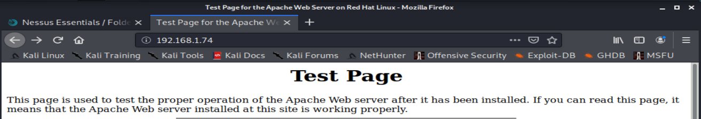

Check open ports
- 192.168.1.74
- - Issues : Default test page out in the open = gives a lot of infos
- #1 servers infos (powered by Apache, Red Hat)
- #2 client has poor hygiene : why leave test page open ? (forgot to take it down ?) => indicates weak configurations